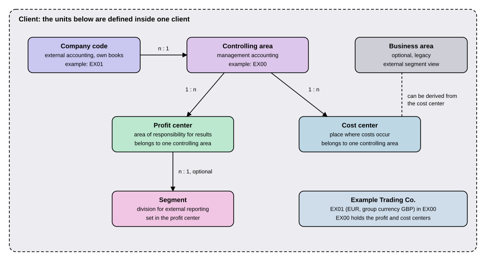

Organizational Units in Finance
|
This content was generated with the assistance of AI and should be verified against the official documentation before being relied on in production. |
A bookkeeper at a small shop answers two different questions with the same receipts. The first is "what do our official books say?", which the tax office and the investors ask. The second is "which part of the business earned or spent what?", which the managers ask. SAP Finance answers each question with its own kind of organizational unit. The company code carries the official books. The controlling area, the cost center and the profit center carry the management view. The segment (and, in older designs, the business area) carries a division of the company for external reporting. This page explains each unit, which unit may be assigned to which, and how many of one belong to one of another (the cardinality), always from the Finance point of view. It is written against SAP S/4HANA 2025 FPS02 (on premise and Private Edition) and SAP S/4HANA Cloud Public Edition 2608. The units themselves apply to both; the tool that creates them differs, as the section on defining them explains.
Before you read
-
Organizational Structures: the whole enterprise structure (client, plant, sales and purchasing units). This page does not repeat it and goes deeper only on the Finance units.
-
Accounting Basics: what a ledger, an account and a posting are.
Key terms
-
Company code: the legally independent unit with its own independent accounting, at which the annual accounts are created.
-
Controlling area: the unit within which a complete cost accounting is performed in a closed system.
-
Cost center: a clearly delimited location where costs occur, inside one controlling area.
-
Profit center: a unit that reflects the structure of the organization for internal control and can be analyzed for its results.
-
Segment: a division of a company for which you can create financial statements for external reporting.
-
Business area: the older, optional unit of external accounting for a business segment or area of responsibility.
-
Standard hierarchy: the one tree of cost centers (and, separately, of profit centers) that every such object must belong to.
-
Cardinality: how many of one unit can belong to one of another, written n : 1 or 1 : n.
The Finance units in one picture
The figure shows the units of this page inside a client. An arrow points from the "many" side to the "one" side or the other way round as the label says, and a dashed line is an optional link. The units that belong to external accounting (company code, segment, business area) and the units that belong to management accounting (controlling area, profit center, cost center) are separate on purpose, and the controlling area is the bridge between them.

Two sentences from SAP’s own pages hold the picture together. The controlling area page says that a controlling area "may contain one or more company codes" which can operate in different currencies. The profit center page says that every profit center is assigned to a controlling area. The rest of this page takes the units one at a time.
The running example: Example Trading Co.
Example Trading Co. has one client, one company code EX01 that keeps its books in euro (EUR) and reports in British pounds (GBP) to its parent, and the ledgers 0L and 2L described in Ledgers, Currencies and Exchange Rates. It also has one controlling area, EX00, that contains EX01. All keys on this page are illustrative values chosen for this site, not SAP defaults. The sections below add profit centers, cost centers and a segment to this one company.
Company code
The company code is the unit that makes a set of books. SAP’s Help Portal defines it as representing a legally independent firm with its own independent accounting, the level at which the statutory balance sheet and profit and loss statement are created, and within the client the highest level of the company structure. The key is four alphanumeric characters.
For Finance the useful way to think about it is as a boundary. Everything inside one company code adds up to one set of books. Several company codes live in one client. Settings such as the chart of accounts, the fiscal year variant and the company code currency are made per company code, which is why the ledgers page starts from the company code. The general rules (key unique within the client, plants and sales organizations assigned to it) are in Organizational Structures.
Controlling area
Financial accounting reports outward. Controlling looks inward: where were costs caused, and who is responsible? The controlling area is the unit in which that inward view is kept. SAP defines it as an organizational unit within an enterprise for which a complete cost accounting can be performed within a closed system.
Its rules, all from the Help Portal page:
-
One controlling area may contain one or more company codes, which can operate in different currencies if required.
-
The company codes of one controlling area must all use the same operational chart of accounts.
-
All internal allocation transactions refer only to objects of the same controlling area. In practice, a cost center of one controlling area cannot be charged by an allocation from another.
-
When you create master data, the system always assigns the controlling objects to a controlling area and a company code.
Read together with the company code rule, the cardinality is: one controlling area to n company codes, and each company code in one controlling area. For Example Trading Co. that is EX00 containing EX01. If a second legal company in another country with a different operational chart of accounts were added, it could not share EX00.
How a controlling area is created matters for the order of work. SAP’s page on processing controlling areas lists the prerequisite that the company codes and business areas to be assigned must already be created in Financial Accounting. The process then is to define the controlling area and its basic data, activate each component (cost centers, order management, profitability analysis and so on), store control information such as the currency the system uses to update the values, and assign one or more company codes.
Cost center
A cost center is the smallest everyday unit of management accounting. SAP defines it as an organizational unit within a controlling area that represents a clearly delimited location where costs occur, which you can divide by functional, settlement-related, activity-related, spatial or responsibility-related standpoints. The standard example is a department: the accounting department, a warehouse, a canteen. When Example Trading Co. pays the rent of its office, the expense is posted to a G/L account and charged to the cost center of the department that uses the room.
Three facts matter for the structure:
-
A cost center belongs to one controlling area, and the system assigns it to a company code as well when you create it, as for every controlling object.
-
Before you create cost centers, you define a hierarchical cost center structure, the standard hierarchy. That tree is how costs are summed up for a manager.
-
Cost centers are used for the differentiated assignment of overhead costs to organizational activities (cost determination) and for controlling the costs of an organization (cost controlling).
The cost center is also the place where the older business area can be derived, as the section on the business area explains. Detailed cost center work (planning, allocations, internal orders) belongs to the Controlling pages of this section; this page covers only where the cost center sits.
Profit center
A cost center collects costs; a profit center answers "did this part of the business make money?" SAP defines it as an organizational unit in accounting that reflects the structure of the organization for the purpose of internal control. Its operating results can be analyzed with the cost-of-sales or the period accounting approach, and by calculating fixed capital as well a profit center can act as an investment center.
The Help Portal page lists what its master data contains: a name, the assigned controlling area, a validity period, the responsibility, the area assigned to the standard hierarchy, and address and communication data. The rules for the structure:
-
Every profit center is assigned to one controlling area (profit center n : 1 controlling area). SAP’s reason is that the values are displayed in G/L accounts.
-
Data can be aggregated across profit centers only if they use the same chart of accounts, the same fiscal year variants and a single currency.
-
Each profit center must be assigned to the standard hierarchy so that data is consistent with other areas. Alternative trees are called profit center groups.
-
A profit center is time-dependent: you enter the period in which actual or plan data can be posted, so a change of responsibility at a fiscal year change does not need a new master record.
A note on age. The page is part of the Profit Center Accounting (EC-PCA) documentation, whose wording about a "parallel update" belongs to the classic design in which profit center data was kept next to the general ledger. SAP’s General Ledger Accounting page for S/4HANA states that Profit Center Accounting is integrated in General Ledger Accounting,. The profit center can therefore be a document splitting characteristic, as the worked example in Document Splitting shows.
Segment
Listed companies must report on parts of the business, not only on the whole. The accounting principles US GAAP and IFRS require segment reporting, and the segment is the unit SAP provides for it. The Help Portal defines it as a division of a company for which you can create financial statements for external reporting. Under US GAAP, a segment is a subarea of a company with activities that generate expenses and revenues, whose operating result management reviews regularly and for which separate financial data is available. SAP states that IFRS has almost exactly the same requirements. US GAAP asks for a virtually complete balance sheet for each segment, essentially everything apart from stockholders' equity.
How the segment gets onto a posting is a Finance-specific rule worth knowing:
-
You define segments in Customizing under Enterprise Structure, Definition, Financial Accounting, Define Segment.
-
You enter a segment in the master record of a profit center. The segment is released only in combination with the profit center.
-
If no segment is given manually during a posting (which is possible only for Financial Accounting transactions), the segment is determined from the profit center’s master record, and the profit center itself can be assigned manually or derived. Because the profit center carries a single segment, the cardinality is n profit centers to one segment, and the segment is optional.
-
You can write your own derivation rules in a Business Add-In (BAdI) under Financial Accounting Global Settings, Tools, Customer Enhancements, Business Add-Ins, Segment Derivation.
-
A balance sheet per segment at any time needs document splitting with a zero balance setting for the characteristic segment. See Document Splitting.
Segment and profit center are updated in the ledgers the same way. SAP’s master data page says the settings for updating segments and profit centers can be made identically in the ledgers, so the same reporting can be used for both, and that functions such as document splitting, assessment and distribution are available for both. If a company needs two dimensions, the page suggests the segment for the primary one and a customer field such as Region in General Ledger Accounting for the secondary one.
Business area (legacy)
Before the segment existed in this form, the business area served the same need. The Help Portal page for SAP ERP 6.0 (enhancement package 8) defines it as an organizational unit of external accounting that corresponds to a specific business segment or area of responsibility, to which the movements in value in Financial Accounting are assigned. Its rules:
-
It is optional.
-
It is used for external segment reporting beyond company codes, for example by product line or branch, and financial statements can be created for business areas for internal purposes.
-
Those statements need the Business area field to be ready for input in all line items, which is a setting in Financial Accounting Global Settings.
-
A posting can name a business area directly, or the system can derive it from another account assignment such as the cost center, if the business area is entered in the cost center master record.
-
A cross-company-code document can post to different business areas across all company codes, so any combination of company code and business area is possible. That is the difference from the controlling area, whose company codes are assigned once.
This site calls the business area legacy for a documented reason: the segment and the profit center now deliver the segment statements described above, and the only business area page found is from the SAP ERP 6.0 documentation, not from the S/4HANA help. The S/4HANA 2025 page on processing controlling areas still mentions business areas among the units that must exist before a controlling area is created, so the unit has not vanished from the product. For a new design, the segment is the unit to use; for an existing system you will meet business areas in older configurations and should read them with the rules above.
All the assignments in one table
| Unit | Assigned to | Rule |
|---|---|---|
Company code |
Client |
Highest level of the company structure within the client; four-character key. |
Company code |
Controlling area |
n company codes : 1 controlling area; the company codes of one controlling area use the same operational chart of accounts and may use different currencies. |
Cost center |
Controlling area and company code |
Each cost center belongs to one controlling area; the system also assigns a company code on creation; the cost center is placed in the standard hierarchy. |
Profit center |
Controlling area |
n profit centers : 1 controlling area; aggregation needs the same chart of accounts, fiscal year variant and one currency. |
Profit center |
Standard hierarchy |
Mandatory; alternative trees are profit center groups. |
Segment |
Profit center |
Optional; one segment in the profit center master record, so n profit centers : 1 segment. |
Business area (legacy) |
Postings, cost center |
Optional; entered on the posting or derived from the cost center master record; any company code and business area combination is possible. |
For Example Trading Co. the structure reads as follows.
| Unit | Example key | Remark |
|---|---|---|
Company code |
|
Currency EUR, group currency GBP, ledgers |
Controlling area |
|
Contains |
Cost center |
|
Administration; belongs to |
Profit centers |
|
Two lines of business; both belong to |
Segments |
|
One entered in each profit center. |
A posting seen through the units
A short example shows why the units matter. Example Trading Co. pays the office rent of 1,000.00 EUR, booked in company code EX01, ledger 0L, on cost center EX-ADM. The line item stores the amount in the company code currency, EUR, and, at the moment of posting, also in the group currency, GBP. For this illustration the translation rate is 0.85 GBP for 1 EUR, a made-up value, so
and the line item carries 1,000.00 EUR and 850.00 GBP. The cost center tells Controlling who is charged: EX-ADM in EX00. If the cost center’s profit center is EX-RETAIL, the profit center and its segment RETAIL also appear on the line, because the segment is determined from the profit center when no segment is given. A report per segment or profit center then reads the same line, which is the point of the integrated design: external and internal views come from one posting. The currency mechanics are the subject of Ledgers, Currencies and Exchange Rates. The assumption that the cost center carries the profit center EX-RETAIL is an illustration of this site; the Help Portal pages used here describe profit centers copying cost center master data but do not state the exact assignment rule.
Defining the units
Defining and assigning these units is configuration, not programming.
| Unit | On premise and Private Edition (Customizing path) | Cloud Public Edition |
|---|---|---|
Company code |
Enterprise Structure, Definition, Financial Accounting (as in Organizational Structures) |
SAP Central Business Configuration, activity Set Up Organizational Structure (see the same page) |
Controlling area |
Controlling, Controlling General, Organization, Maintain Controlling Area; then assign company codes |
Not covered by the pages used for this page |
Segment |
Enterprise Structure, Definition, Financial Accounting, Define Segment |
Not covered by the pages used for this page |
Business area |
Enterprise Structure, Definition, Financial Accounting, Define Business Area |
Not covered by the pages used for this page |
These paths come from the Help Portal pages cited above. They require an SAP system; not run here. The assignment of company codes to a controlling area is documented in the Help Portal topic Assigning Controlling Areas and Company Codes, which this page names but does not reproduce. As with every Customizing change, a change is recorded in a Customizing request and moved through the landscape (see Customizing and the Implementation Guide).
Common mistakes
-
Mixing company code and controlling area. The company code is a boundary of the external books; the controlling area is the boundary of cost accounting. One controlling area can span several company codes only if they share the operational chart of accounts.
-
Expecting an allocation between two controlling areas. Internal allocations stay inside one controlling area.
-
Creating a controlling area before its company codes. The company codes must exist first.
-
Treating the segment as a free field. Without a profit center the segment is not released, and a segment balance sheet needs document splitting with a zero balance setting.
-
Starting a new design on business areas. Use segment and profit center for new work; read business areas as legacy.
Summary
-
The company code carries the official books; the controlling area, cost center and profit center carry the management view; the segment carries external reporting by division, and the business area is the older, optional unit for the same need.
-
Company codes are assigned to one controlling area, n : 1, and must share its operational chart of accounts.
-
Cost centers and profit centers each belong to one controlling area, and each sits in a standard hierarchy.
-
The segment is set in the profit center master record and is optional; segment balance sheets require document splitting.
-
The business area is optional, legacy, and can be derived from the cost center.
-
On premise the units are defined in Customizing; in Public Edition the company code is created in SAP Central Business Configuration.